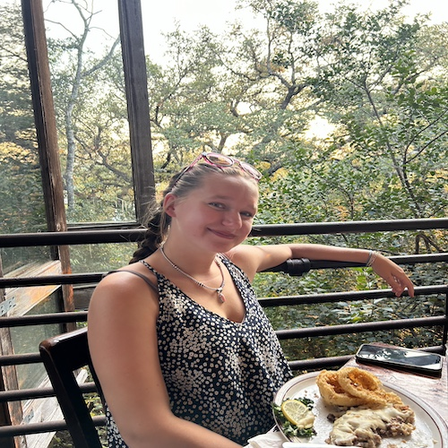

Welcome to my webpage.
I am a student in the
Geography Department at
Texas State University.
Research Interests:
- GIS
- Fly Fishing
- Wildlife Conservation
- Cooking
Webmap Reviews
Geocoding Map
var mymap = L.map('mapid');
var geocoder = L.Control.geocoder({
defaultMarkGeocode: false,
geocoder: new L.Control.Geocoder.Nominatim()
}).on('markgeocode', function(e) {
var bbox = e.geocode.bbox;
var poly = L.polygon([
bbox.getSouthEast(),
bbox.getNorthEast(),
bbox.getNorthWest(),
bbox.getSouthWest()
]);
mymap.fitBounds(poly.getBounds());
}).addTo(mymap);